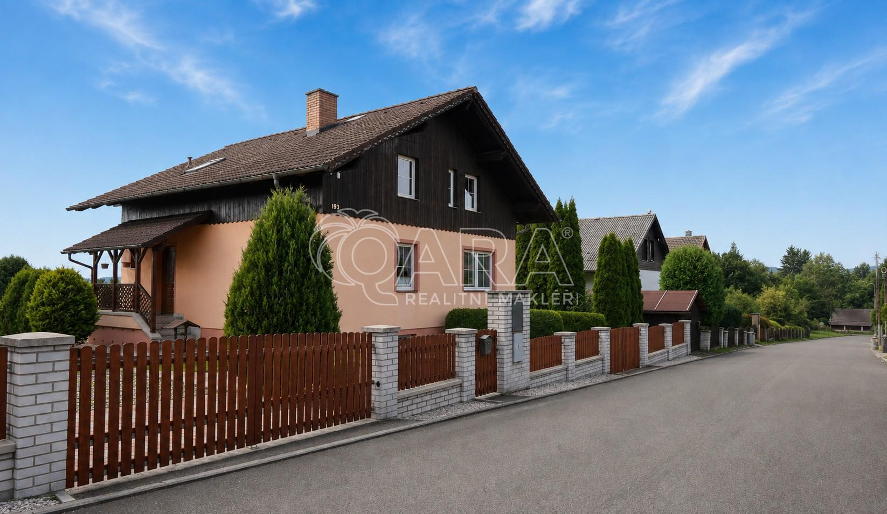

Rodinný dům s profesionální dílnou. Ideální pro podnikání, řemeslo i pohodlné rodinné bydlení
Hledáte místo, kde můžete bydlet a zároveň podnikat, aniž byste museli dojíždět do pronajatých prostor? Ve Věšíně na úpatí Brd nabízím nemovitost, která spojuje komfort rodinného domu s kvalitním pracovním zázemím.
Rodinný dům o dispozici 5+1 s celkovou plochou 220 m² stojí na pozemku o výměře 1 711 m² plus samostatně stojící zděná dílna o velikosti 55 m², která svou vybaveností výrazně převyšuje běžné garáže nebo hobby dílny.
Dům je řešen jako třípodlažní. V hlavním obytném podlaží se nachází kuchyně s jídelnou, obývací pokoj se vstupem na terasu a zahradu, koupelna, samostatné WC a spíž. V podkroví jsou tři samostatné pokoje, koupelna, WC a praktické úložné prostory. Prostorný suterén nabízí garáž, technické zázemí, prádelnu, společenskou místnost i další skladovací prostory.
Největší předností této nemovitosti je samostatná zděná dílna o výměře 55 m². Díky výšce stropu 3,1 m a vratům o rozměrech 3 × 2,8 m do ní pohodlně vjede i traktor nebo větší pracovní technika. Dílna je vybavena šesti zásuvkami na 380 V, stropním zářivkovým osvětlením a rozvodem stlačeného vzduchu s vývody na rychlospojky. Dílna disponuje hlavními vjezdovými vraty a navíc i menšími bočními vraty.
Celý areál je navržen s důrazem na praktičnost. Příjezdové komunikace i manipulační plochy kolem domu a dílny jsou kvalitně zpevněné s vysokou nosností, takže bez problémů zvládnou provoz dodávek, traktorů, přívěsů i další techniky. Na pozemku se navíc nachází ještě menší truhlářská dílna a prostor připravený pro vybudování pergoly nebo dalšího venkovního zázemí.
Nemovitost ocení především řemeslníci, stavební firmy, truhláři, automechanici, zemědělci, servisní technici i podnikatelé, kteří chtějí mít své zázemí přímo u domu. Stejně dobře ale poslouží i rodině, která hledá prostorné bydlení s velkou zahradou a možností věnovat se svým koníčkům.
Věšín je vyhledávanou obcí na úpatí Brd. Nabízí klidné bydlení v krásné přírodě s výbornými podmínkami pro turistiku, cyklistiku, běžecké lyžování i houbaření. V obci je mateřská škola a malotřídní základní škola, kompletní občanskou vybavenost najdete v Rožmitále pod Třemšínem, vzdáleném přibližně 3 km.
Pokud hledáte nemovitost, která Vám umožní pohodlně bydlet, podnikat a mít vše na jednom místě, doporučuji osobní prohlídku. Takových nabídek je na trhu jen minimum.

Máte zájem o prohlídku?
Ozvěte se mi pro bližší informace, podklady k nemovitosti nebo sjednání termínu.